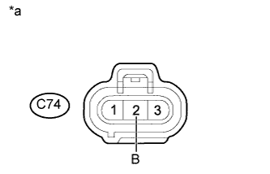

DTC P0488 Диапазон/характеристики управления положением дроссельной заслонки системы рециркуляции отработавших газов |
| Режим поездки при обнаружении DTC | Условие обнаружения DTC | Неисправный участок |
| Многократно выполняйте следующие операции в течение 1 мин: постепенно поднимите частоту вращения коленчатого вала двигателя с холостого хода до 3000 об/мин приблизительно в течение 10 с, а затем отпустите педаль акселератора, чтобы вернуться к холостому ходу. | Заданный и фактический углы поворота дроссельной заслонки различаются в течение примерно 20 с. (логика диагностирования за 1 поездку) |
|
| Продолжительность включения электродвигателя дроссельной заслонки определенное число раз превышает пороговое значение в течение 0,5 с (в общей сложности в течение 40 с или дольше). (логика диагностирования за 1 поездку) |
| № DTC | Параметры из Data List |
| P0488 |
|
| Условие | Положение дроссельной заслонки |
| Момент, когда педаль акселератора нажимается или отпускается при 3000 об/мин | Угол поворота дроссельной заслонки медленно изменяется |
| 1.ВЫПОЛНИТЕ АКТИВНУЮ ДИАГНОСТИКУ С ПОМОЩЬЮ ПОРТАТИВНОГО ДИАГНОСТИЧЕСКОГО ПРИБОРА (DIESEL THROTTLE TARGET ANGLE) |
Подсоедините портативный диагностический прибор к DLC3.
Включите зажигание (IG) и портативный диагностический прибор.
Войдите в следующие меню: Powertrain / Engine and ECT / Active Test / Diesel Throttle Target Angle.
В процессе непрерывной смены значений 0, 30, 60, 90, 60, 30 и 0% в режиме Active Test убедитесь, что значение Actual Throttle Position постепенно становится равным установленному углу поворота.
|
| ||||
|
| ||||
| 2.ПРОВЕРЬТЕ ЖГУТ ПРОВОДОВ И РАЗЪЕМ (ИСТОЧНИК ПИТАНИЯ ЭЛЕКТРОДВИГАТЕЛЯ ПРИВОДА ДРОССЕЛЬНОЙ ЗАСЛОНКИ) |
|  |
Отсоедините разъем двигателя дроссельной заслонки.
Измерьте напряжение в соответствии со значениями, приведенными в таблице.
| Контакты для подключения диагностического прибора | Положение переключателя | Заданные условия |
| C74-2 (B) - масса | Выключатель зажигания в состоянии ON (ВКЛ) (IG) | 11 - 14 В |
| *a | Вид спереди разъема со стороны жгута проводов: (к электродвигателю привода дроссельной заслонки) |
Подсоедините разъем электродвигателя привода дроссельной заслонки.
|
| ||||
| OK | |
| 3.ПРОВЕРЬТЕ ЖГУТ ПРОВОДОВ И РАЗЪЕМ (ЦЕПЬ МАССЫ) |
Отсоедините разъем двигателя дроссельной заслонки.
Измерьте сопротивление в соответствии со значениями, приведенными в таблице ниже.
| Контакты для подключения диагностического прибора | Состояние | Заданные условия |
| C74-3 (RSC) - масса | Всегда | Менее 1 Ом |
Подсоедините разъем электродвигателя привода дроссельной заслонки.
|
| ||||
| OK | |
| 4.ПРОВЕРЬТЕ ЖГУТ ПРОВОДОВ И РАЗЪЕМ (ДВИГАТЕЛЬ ПРИВОДА ДРОССЕЛЬНОЙ ЗАСЛОНКИ – ECM) |
Отсоедините разъем двигателя дроссельной заслонки.
Отсоедините разъем ЭБУ.
Измерьте сопротивление в соответствии со значениями, приведенными в таблице ниже.
| Контакты для подключения диагностического прибора | Состояние | Заданные условия |
| C74-1 (RSO) - C92-15 (LUSL) | Всегда | Менее 1 Ом |
| Контакты для подключения диагностического прибора | Состояние | Заданные условия |
| C74-1 (RSO) или C92-15 (LUSL) - масса | Всегда | 10 кОм или более |
Подсоедините разъем электродвигателя привода дроссельной заслонки.
Подсоедините разъем ECM.
|
| ||||
| OK | |
| 5.УДАЛИТЕ НАГАР (С КОРПУСА ДРОССЕЛЬНОЙ ЗАСЛОНКИ ДИЗЕЛЬНОГО ДВИГАТЕЛЯ В СБОРЕ) |
Визуально проверьте наличие отложений нагара в корпусе дроссельной заслонки дизельного двигателя. При наличии отложений очистите корпус дроссельной заслонки дизельного двигателя.
| ДАЛЕЕ | |
| 6.ВЫПОЛНИТЕ АКТИВНУЮ ДИАГНОСТИКУ С ПОМОЩЬЮ ПОРТАТИВНОГО ДИАГНОСТИЧЕСКОГО ПРИБОРА (DIESEL THROTTLE TARGET ANGLE) |
Подсоедините портативный диагностический прибор к DLC3.
Включите зажигание (IG) и портативный диагностический прибор.
Войдите в следующие меню: Powertrain / Engine and ECT / Active Test / Diesel Throttle Target Angle.
В процессе непрерывной смены значений 0, 30, 60, 90, 60, 30 и 0% в режиме Active Test убедитесь, что значение Actual Throttle Position постепенно становится равным установленному углу поворота.
|
| ||||
|
| ||||
| 7.ЗАМЕНИТЕ КОРПУС ДРОССЕЛЬНОЙ ЗАСЛОНКИ ДИЗЕЛЬНОГО ДВИГАТЕЛЯ В СБОРЕ |
Замените корпус дроссельной заслонки дизельного двигателя в сборе (Нажмите здесь).
| ДАЛЕЕ | |
| 8.ПРОВЕРЬТЕ, ВЫВОДИТСЯ ЛИ КОД DTC СНОВА |
Сбросьте коды DTC (Нажмите здесь).
Подсоедините портативный диагностический прибор к DLC3.
Включите зажигание (IG) и портативный диагностический прибор.
Запустите двигатель.
В течение более 10 с медленно повышайте частоту вращения коленчатого вала двигателя до 3000 об/мин и понижайте ее.
Войдите в следующие меню: Powertrain / Engine and ECT / DTC.
Считайте коды DTC.
| Результат | Следующий шаг |
| Выводится P0488 | А |
| Коды DTC не выводятся | B |
|
| ||||
| А | |
| 9.ЗАМЕНИТЕ ECM |
Замените ECM (Нажмите здесь).
|
| ||||
| 10.ОТРЕМОНТИРУЙТЕ ИЛИ ЗАМЕНИТЕ ЖГУТ ПРОВОДОВ ИЛИ РАЗЪЕМ (ЭЛЕКТРОДВИГАТЕЛЬ ПРИВОДА ДРОССЕЛЬНОЙ ЗАСЛОНКИ - АККУМУЛЯТОРНАЯ БАТАРЕЯ) |
Отремонтируйте или замените жгут проводов или разъем.
|
| ||||
| 11.ОТРЕМОНТИРУЙТЕ ИЛИ ЗАМЕНИТЕ ЖГУТ ПРОВОДОВ ИЛИ РАЗЪЕМ |
Отремонтируйте или замените жгут проводов или разъем.
| ДАЛЕЕ | |
| 12.ПРОВЕРЬТЕ, УСТРАНЕНА ЛИ ДОЛЖНЫМ ОБРАЗОМ НЕИСПРАВНОСТЬ |
Подсоедините портативный диагностический прибор к DLC3.
Сбросьте коды DTC (Нажмите здесь).
Выключите зажигание.
Запустите двигатель.
В течение не менее 10 с медленно повышайте частоту вращения коленчатого вала двигателя до 3000 об/мин, а затем снижайте ее.
Убедитесь, что DTC не выводится снова.
Войдите в следующие меню: Powertrain / Engine and ECT / Utility / All Readiness.
Введите DTC P0488.
Убедитесь, что для параметра STATUS (состояние) отображается значение NORMAL (нормальное). Если значением параметра STATUS является INCOMPLETE (не завершено) или UNKNOWN (нет данных), в течение не менее 10 с медленно повышайте частоту вращения коленчатого вала двигателя до 3000 об/мин и снижайте ее, а затем дайте двигателю поработать на холостом ходу в течение 5 мин.
| ДАЛЕЕ | ||
| ||